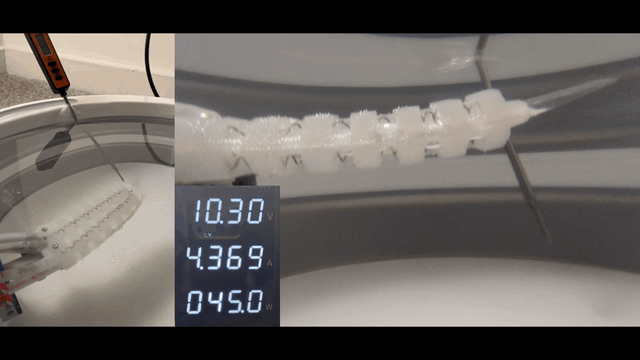
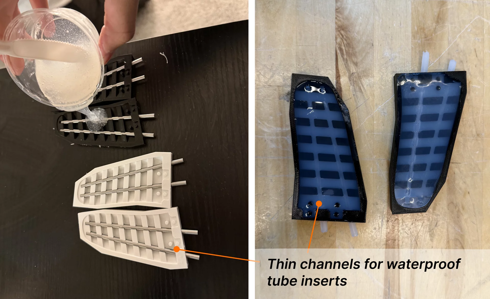
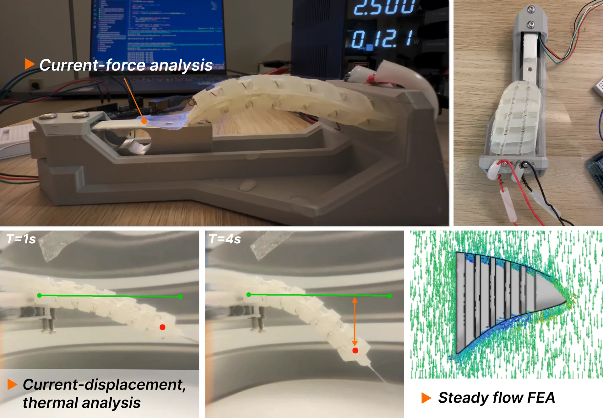

Soft Robotic Underwater Fin Actuator
Carnegie Mellon University · Oct ~ Dec 2025 · Team of 4
Skills

Overview
Coral reefs are fragile ecosystems and propeller-driven underwater robots can damage them. To address this, I worked on fin design and controls for a soft, multimaterial actuator driven by shape memory alloy (SMA) wires.
Unlike my past MechE work, soft fins and SMA actuators can’t really be modeled the way we often do with rigid robots. I learned to fail fast: start from intuition, then do a lot of hands-on testing and response characterization to tune the design and controls.

What I did
1) Iterative testing across 5+ prototypes to optimize fin actuation
Fin deformation depends on many coupled parameters: thickness/stiffness, weight, flexure groove spacing, and where the SMA wires are attached.
My first designs (V1–2) followed a real fin’s geometry using 20A silicone, but ended up too heavy, buckled, and had weak SMA attachment points. To address this, I designed a 95A TPU version (V3), which stopped the buckling but was too stiff to spring back to its neutral position. Combining all these learnings, V4 has a thicker but lightweight 40A silicone leading edge, tighter grooves and a flexible polypropylene spine, which helped resist buckling for a much smoother cycle.
Another issue I had overlooked was that in water, the fin needed ~2x the current it did in air due to heat loss. We tried a thin hydrophobic coating and embedding the wires in the silicone as it cured, but what worked best was a flexible tube insert. To simplify assembly, I designed multi-stage molds with metal inserts so we could cast the tube channels directly, then spray on a waterproof coating once the silicone cured.

2) Built a reliable open-loop current controller by characterizing actuator behavior
SMA wires contract as they heat up, but their response is nonlinear with a lot of hysteresis, so again, quite hard to model. Moreover, in open-loop control, balancing the power stroke against the recovery stroke was tricky, and the fin would slowly drift away from neutral over long cycles and eventually buckle against itself.
A teammate and I spent several nights running the fin at currents from 1.0 to 2.25 A, measuring its force and displacement with a CV tracker, which gave us response curves over 20+ cycles. Using this, I helped build a control algorithm that varies the current through each stroke, so the fin prioritizes a fast power stroke without drifting over time.